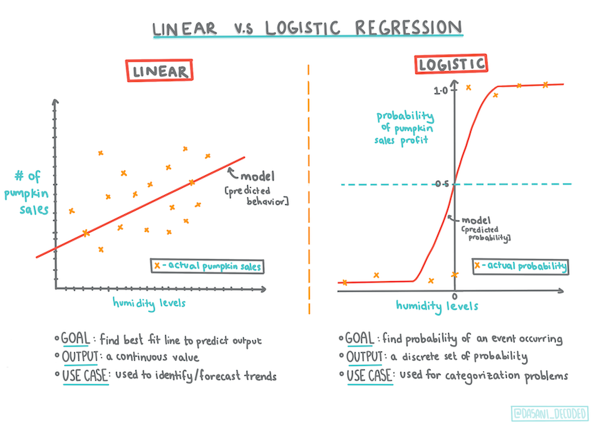

逻辑回归预测分类⚓︎

课前测⚓︎
介绍⚓︎
在关于回归的最后一课中，我们将学习逻辑回归，这是经典的基本技术之一。你可以使用此技术来发现预测二元分类的模式。这是不是巧克力糖？这种病会传染吗？这个顾客会选择这个产品吗？
在本课中，你将学习：
- 用于数据可视化的新库
- 逻辑回归技术
✅ 在此学习模块 中加深你对使用此类回归的理解
前提⚓︎
使用南瓜数据后，我们现在对它已经足够熟悉了，可以意识到我们可以使用一个二元类别：Color。
让我们建立一个逻辑回归模型来预测，给定一些变量，给定的南瓜可能是什么颜色（橙色🎃或白色👻）。
为什么我们在关于回归的课程分组中谈论二元分类？ 只是为了语言上的方便，因为逻辑回归真的是一种分类方法，尽管是基于线性的。我们将在在下一课组中了解对数据进行分类的其他方法。
定义问题⚓︎
出于我们的目的，我们将其表示为二进制：“橙色”或“非橙色”。我们的数据集中还有一个“条纹”类别，但它的实例很少，所以我们不会使用它。无论如何，一旦我们从数据集中删除空值，它就会消失。
🎃 有趣的是，我们有时称白南瓜为鬼南瓜。他们不是很容易雕刻，所以它们不像橙色的那么受欢迎，但它们看起来很酷！
关于逻辑回归⚓︎
逻辑回归在一些重要方面与你之前了解的线性回归不同。
二元分类⚓︎
逻辑回归不提供与线性回归相同的功能。前者提供关于二元类别（“橙色或非橙色”）的预测，而后者能够预测连续值，例如，给定南瓜的起源和收获时间，其价格将上涨多少。
其他分类⚓︎
还有其他类型的逻辑回归，包括多项和有序：
- 多项，涉及多个类别 - “橙色、白色和条纹”。
- 有序，涉及有序类别，如果我们想对我们的结果进行逻辑排序非常有用，例如我们的南瓜按有限数量的大小（mini、sm、med、lg、xl、xxl）排序。
仍然是线性的⚓︎
尽管这种类型的回归都是关于“类别预测”的，但当因变量（颜色）和其他自变量（数据集的其余部分，如城市名称和大小）之间存在明显的线性关系时，它仍然效果最好。最好了解一下这些变量是否存在线性划分。
变量不必相关⚓︎
还记得线性回归如何更好地处理更多相关变量吗？逻辑回归是相反的——变量不必对齐。这适用于相关性较弱的数据。
你需要大量干净的数据⚓︎
如果使用更多数据，逻辑回归将给出更准确的结果；我们的小数据集对于这项任务不是最佳的，请记住这一点。
✅ 考虑适合逻辑回归的数据类型
练习 - 整理数据⚓︎
首先，稍微清理一下数据，删除空值并仅选择其中一些列：
-
添加以下代码：
from sklearn.preprocessing import LabelEncoder new_columns = ['Color','Origin','Item Size','Variety','City Name','Package'] new_pumpkins = pumpkins.drop([c for c in pumpkins.columns if c not in new_columns], axis=1) new_pumpkins.dropna(inplace=True) new_pumpkins = new_pumpkins.apply(LabelEncoder().fit_transform)你可以随时查看新的数据帧：
new_pumpkins.info
可视化 - 并列网格⚓︎
到现在为止，你已经再次使用南瓜数据加载了 starter notebook 并对其进行了清理，以保留包含一些变量（包括 Color）的数据集。让我们使用不同的库来可视化 notebook 中的数据帧：Seaborn，它是基于我们之前使用的 Matplotlib 构建的。
Seaborn 提供了一些巧妙的方法来可视化你的数据。例如，你可以比较并列网格中每个点的数据分布。
-
通过实例化一个
PairGrid，使用我们的南瓜数据new_pumpkins，然后调用map()来创建这样一个网格：import seaborn as sns g = sns.PairGrid(new_pumpkins) g.map(sns.scatterplot)通过并列观察数据，你可以看到颜色数据与其他列的关系。
✅ 鉴于此散点图网格，你可以设想哪些有趣的探索？
使用分类散点图⚓︎
由于颜色是一个二元类别（橙色或非橙色），它被称为“分类数据”，需要一种更专业的方法来可视化。还有其他方法可以可视化此类别与其他变量的关系。
你可以使用 Seaborn 图并列可视化变量。
-
尝试使用“分类散点”图来显示值的分布：
sns.swarmplot(x="Color", y="Item Size", data=new_pumpkins)
小提琴图⚓︎
“小提琴”类型的图很有用，因为你可以轻松地可视化两个类别中数据的分布方式。小提琴图不适用于较小的数据集，因为分布显示得更“平滑”。
-
作为参数
x=Color、kind="violin"并调用catplot()：sns.catplot(x="Color", y="Item Size", kind="violin", data=new_pumpkins)✅ 尝试使用其他变量创建此图和其他 Seaborn 图。
现在我们已经了解了颜色的二元类别与更大的尺寸组之间的关系，让我们探索逻辑回归来确定给定南瓜的可能颜色。
🧮 数学知识
还记得线性回归如何经常使用普通最小二乘法来得出一个值吗？逻辑回归依赖于使用sigmoid 函数 的“最大似然”概念。绘图上的“Sigmoid 函数”看起来像“S”形。它接受一个值并将其映射到0和1之间的某个位置。它的曲线也称为“逻辑曲线”。它的公式如下所示：
其中 sigmoid 的中点位于 x 的 0 点，L 是曲线的最大值，k 是曲线的陡度。如果函数的结果大于 0.5，则所讨论的标签将被赋予二进制选择的类“1”。否则，它将被分类为“0”。

建立你的模型⚓︎
在 Scikit-learn 中构建模型来查找这些二元分类非常简单。
-
选择要在分类模型中使用的变量，并调用
train_test_split()拆分训练集和测试集：from sklearn.model_selection import train_test_split Selected_features = ['Origin','Item Size','Variety','City Name','Package'] X = new_pumpkins[Selected_features] y = new_pumpkins['Color'] X_train, X_test, y_train, y_test = train_test_split(X, y, test_size=0.2, random_state=0) -
现在你可以训练你的模型，用你的训练数据调用
fit()，并打印出它的结果：from sklearn.model_selection import train_test_split from sklearn.metrics import accuracy_score, classification_report from sklearn.linear_model import LogisticRegression model = LogisticRegression() model.fit(X_train, y_train) predictions = model.predict(X_test) print(classification_report(y_test, predictions)) print('Predicted labels: ', predictions) print('Accuracy: ', accuracy_score(y_test, predictions))看看你的模型的记分板。考虑到你只有大约 1000 行数据，这还不错：
precision recall f1-score support 0 0.85 0.95 0.90 166 1 0.38 0.15 0.22 33 accuracy 0.82 199 macro avg 0.62 0.55 0.56 199 weighted avg 0.77 0.82 0.78 199 Predicted labels: [0 0 0 0 0 0 0 0 0 0 0 0 0 0 0 0 0 0 0 0 1 0 0 0 0 0 0 0 0 0 0 0 0 1 0 0 0 0 0 0 0 0 0 0 0 0 0 1 0 0 0 0 0 0 0 0 0 0 0 0 0 0 0 0 0 0 0 0 0 0 0 0 0 0 1 0 0 0 0 0 0 0 0 0 0 0 0 0 0 0 0 0 0 0 0 0 0 0 0 0 0 0 1 0 0 0 0 0 0 0 1 0 0 0 0 0 0 0 0 0 0 0 0 0 0 0 0 0 0 0 0 0 0 0 0 0 0 0 0 0 0 0 0 0 0 1 1 1 0 0 0 0 0 0 0 0 0 0 0 0 0 0 0 0 0 0 0 0 0 0 0 0 0 0 0 0 0 0 0 0 0 0 0 0 0 0 0 0 1 0 1 0 0 1 0 0 0 1 0]
通过混淆矩阵更好地理解⚓︎
虽然你可以通过获得记分板报告条目把上面的项目打印出来，通过使用混淆矩阵可以更容易地理解你的模型，帮助我们了解模型的性能。
🎓 “混淆矩阵”（或“误差矩阵”）是一个表格，用于表示模型的真假阳性和假阴性，从而衡量预测的准确性。
-
要使用混淆指标，请调用
confusin_matrix()：from sklearn.metrics import confusion_matrix confusion_matrix(y_test, predictions)看看你的模型的混淆矩阵：
array([[162, 4], [ 33, 0]])
这里发生了什么？假设我们的模型被要求对两个二元类别之间的项目进行分类，即类别“南瓜”和类别“非南瓜”。
- 如果你的模型将某物预测为南瓜并且它实际上属于“南瓜”类别，我们将其称为真阳性，由左上角的数字显示。
- 如果你的模型预测某物不是南瓜，并且它实际上属于“南瓜”类别，我们将其称为假阳性，如右上角的数字所示。
- 如果你的模型将某物预测为南瓜并且它实际上属于“非南瓜”类别，我们将其称为假阴性，由左下角的数字显示。
- 如果你的模型预测某物不是南瓜，并且它实际上属于“非南瓜”类别，我们将其称为真阴性，如右下角的数字所示。
正如你可能已经猜到的那样，最好有更多的真阳性和真阴性以及较少的假阳性和假阴性，这意味着模型性能更好。
✅ Q：根据混淆矩阵，模型怎么样？ A：还不错；有很多真阳性，但也有一些假阴性。
让我们借助混淆矩阵对TP/TN和FP/FN的映射，重新审视一下我们之前看到的术语：
🎓 准确率：TP/(TP + FP) 检索实例中相关实例的分数（例如，哪些标签标记得很好）
🎓 召回率: TP/(TP + FN) 检索到的相关实例的比例，无论是否标记良好
🎓 F1分数: (2 * 准确率 * 召回率)/(准确率 + 召回率) 准确率和召回率的加权平均值，最好为1，最差为0
🎓 Support：检索到的每个标签的出现次数
🎓 准确度：(TP + TN)/(TP + TN + FP + FN) 为样本准确预测的标签百分比。
🎓 宏平均值: 计算每个标签的未加权平均指标，不考虑标签不平衡。
🎓 加权平均值：计算每个标签的平均指标，通过按支持度（每个标签的真实实例数）加权来考虑标签不平衡。
✅ 如果你想让你的模型减少假阴性的数量，你能想出应该关注哪个指标吗？
可视化该模型的 ROC 曲线⚓︎
这不是一个糟糕的模型；它的准确率在 80% 范围内，因此理想情况下，你可以使用它来预测给定一组变量的南瓜颜色。
让我们再做一个可视化来查看所谓的“ROC”分数
from sklearn.metrics import roc_curve, roc_auc_score
y_scores = model.predict_proba(X_test)
# calculate ROC curve
fpr, tpr, thresholds = roc_curve(y_test, y_scores[:,1])
sns.lineplot([0, 1], [0, 1])
sns.lineplot(fpr, tpr)
再次使用 Seaborn，绘制模型的接收操作特性或 ROC。 ROC 曲线通常用于根据分类器的真假阳性来了解分类器的输出。“ROC 曲线通常具有 Y 轴上的真阳性率和 X 轴上的假阳性率。” 因此，曲线的陡度以及中点线与曲线之间的空间很重要：你需要一条快速向上并越过直线的曲线。在我们的例子中，一开始就有误报，然后这条线正确地向上和重复：
最后，使用 Scikit-learn 的roc_auc_score API 来计算实际“曲线下面积”（AUC）：
auc = roc_auc_score(y_test,y_scores[:,1])
print(auc)
结果是 0.6976998904709748。 鉴于 AUC 的范围从 0 到 1，你需要一个高分，因为预测 100% 正确的模型的 AUC 为 1；在这种情况下，模型_相当不错_。
在以后的分类课程中，你将学习如何迭代以提高模型的分数。但是现在，恭喜！你已经完成了这些回归课程！
🚀挑战⚓︎
关于逻辑回归，还有很多东西需要解开！但最好的学习方法是实验。找到适合此类分析的数据集并用它构建模型。你学到了什么？小贴士：尝试 Kaggle 获取有趣的数据集。
课后测⚓︎
复习与自学⚓︎
阅读斯坦福大学的这篇论文的前几页关于逻辑回归的一些实际应用。想想那些更适合于我们目前所研究的一种或另一种类型的回归任务的任务。什么最有效？
任务⚓︎
创建日期: November 22, 2023